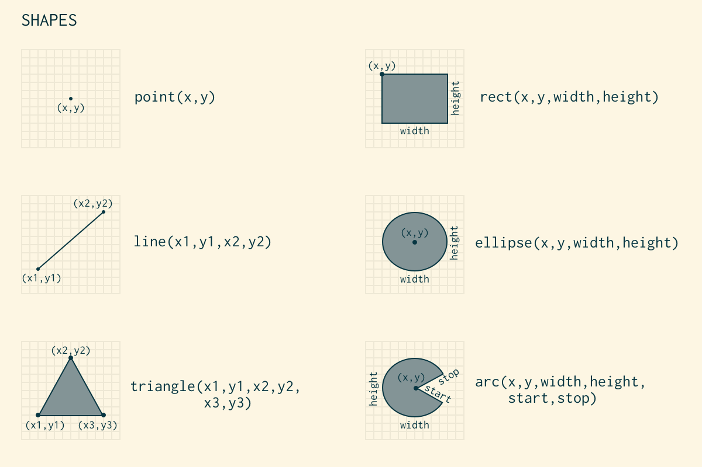

/**
* Creative Coding with p5.js
*
* “For many decades, computers have been more than enhanced
* calculators. They’re media machines, they’re imagination
* engines, computers are tools for thought, and they’re
* design machines. Computers are a unique and emerging
* medium for the visual arts.” — Casey Reas
*
*/
// DRAWING
Drawing with code is a lot like drawing on a graph paper.
You have a grid of points or *pixels* laid out on x and y
axis. Each pixel is described by two properties: its
position and color.
In these examples, we'll explore drawing and coloring shapes.
